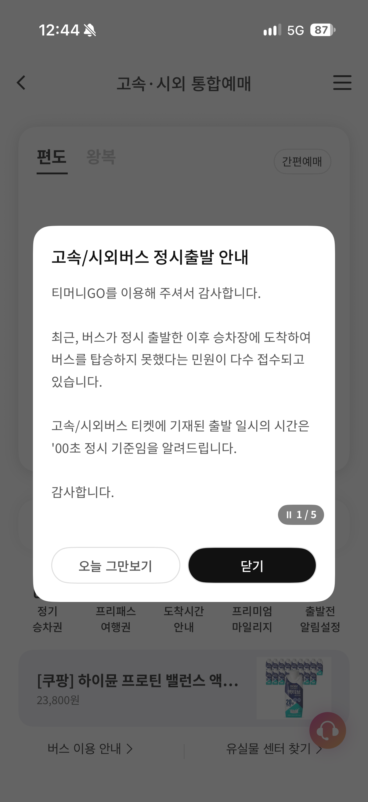

예약이라는 단어가 죠스로 보이나

예약이라는 단어가 죠스로 보이나
버스회사는 시민의 지각이 두렵습니까?
점점 골빈것들이 많아지는 느낌이다
이디오크러슄ㅋㅋㅋㅋ
예전엔 저러면 욕먹고 쳐맞고 해서 고쳐졌는데 요즘은 저런애들이 더 용감함
ㅋㅋㅋㅋㅋㅋㅋㅋㅋㅋㅋㅋㅋㅋㅋㅋㅋㅋㅋㅋㅋ황당하네
13시 출발 버스를 13시 00분 59초까지 기다렸다가 출발하는줄아는 저능아들이 많아진 느낌;;
13시면 13시 00분 00초 출발인데
내가 아직 안탔는데 기다려줘야지 인거임
그런 디테일 없다
예약을 했으므는!! 승객이 올때까지 기다리는게 맞는거 아뇨?
??? : 아니!!! 내 손목시계는 아직 59분이었다니까!!!!
12시 까지면 12시 00분 00초01만 돼도 넘은거다
마음대로 분 단위로 정하지마라
그냥 전액 환불해달라고 떼쓰는거 같은데 실제로 저런 능지 부족한 새끼들이 있을리가 없잖음
ㅋㅋㅋ 시외고속버스는 절대 니들 민원 안 들어준다
국퍙오도 솔직히 너무 고평가 됐어
긴가민가하면 너희 ai한테 물어봐라
온 세상이 자기 기준으로 돌아가는 시스템으로 착각하나봄. 세상 사람들은 다 Npc 이고
npc한테 좆간질하는 게임인줄 아는가봄ㅋㅋㅋ
저거 지가 늦어놓고 왜 정시출발하냐고 민원넣어서 생긴거네 ㅋㅋㅋ
이런애들도 살아가는거보면 세상 참 좋긴해
이미 타서 기다리는 사람 생각은 왜 안 해줘
이미 타서 기다리고있는 20명 VS 지각한 1명
너 아직 세상의 더러움을 안 겪어본 화초구나.
00분 59초에 출발하는 거로 기준을 세우면, 1초만 늦게 출발해도 01분에 버스가 출발했다며
지연운행한다고 민원 넣을 진상이 훨씬 많아서 그럼.
기업이 몰라서 그러는 게 아니야.
그러게 굳이 예약까지 해놓고 늦게오는 병신 버러지새끼가 가정교육을 독학으로 배웠는지 병신마냥 손님이 왕인줄 아는 새끼가 있다는게 이해가 안되긴해. 설마 그런 빡대가리가 있겠어? 예약이란 뜻이 난 이 시간까진 무조건 가서 서비스를 받기 위해서 대기할게라는걸 모르는거면 음...
ㄹㅇ 회사도 구직자들 요구에 맞게 한명분 월급을 쪼개서 열명을 고용해줘야 된다
부모님이 가정교육 제대로 안시킴?
한 5분 일찍 와서 기다리면 죽나? 왜 저러는거야
약속 시간 매번 늦는 사람들 특징이 횡단보도 기다리는 시간, 지하철 기다리는 시간, 버스 배차 간격 이런 걸 아예 고려하지 않은 애들이야
늘 하는 핑계가 난은 일찍 나왔는데 기다리다가 늦었다 ㅇㅈㄹ 하는데 그럼 일찍 온 사람이나 제시간에 맞춰 오는 사람은 뭔데
11월 10일 23시 59분도 11월 10일이니, 1시59분59초도 1시라는 새끼가 주변에 있음. 대화 안 섞기로 함.
우매한 것들의 자기 합리화지
진짜 병신이 너무 많은 나라가 되었다
서울역-부산역 출발 플랫폼에 보면
15분 전부터 객차 텅텅 비어있다가 출발 1분전에 우르르 몰려오는 애들 많더라
정시 바로 출발이라 못타서 다시 에스컬레이터 타고 올라가는애들도 있고
저거 몇년전부터 공지로 떠있는 메세지같은데 ㅋㅋ
안적혀 있으니까 맘대로 해도 된다 어 이거 완전